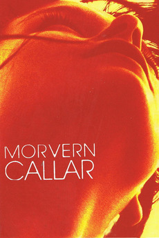

The narrative in the autobiography, Untold Intelligence, pieces together a life from years of sexual violence and mind control. Anna Morvern identifies kabbalistic teachings in Kubrick’s two films when finding threads of a received tradition brought into consciousness on the page despite her
post-traumatic dissociative amnesia.

Images in 2001 are explored within the recurrent themes of Morvern’s book: traumatic shattering, and the terrible loss of one. She looks at unintelligibility and disconnection in 2001 in relation to the decisions and breakdown of the programmed, speaking and singing ‘AI’, HAL, and the death of astronaut, Frank Poole. That unintelligibility is juxtaposed with Morvern’s writing on prophetic speech and song, and the figure of the prophet as extolled by Moses in the Bible, by English visionary William Blake, but also discovered in traces across other, more recent, popular works—the books and films of Marguerite Duras and Alan Warner’s Morvern Callar (the book and Lynne Ramsay’s film adaptation).
British-Irish author, Morvern, says that she noticed, after writing her memoir, that both she and Iranian film-maker, Panah Panahi, had chosen to reference the same scene from Kubrick’s 2001. She explains:
The relevant scene in Panahi’s prize-winning 2021 film, Hit the Road (جاده خاکی), is the one where the family stops their car journey for a break on the country roadside. Farid is sitting with his mother and she asks him what his favourite movie is, and he talks about 2001. He describes the scene when Dave goes deep into a black hole, ‘crossing the limits of time and space’. In Untold Intelligence, this is the scene I chose to reference when asking about going past this point—is it trauma or transcendence? Interestingly, I think Panahi (or Farid) and I see this scene differently. Farid (or Panahi) sees black, I see colour. He sees a figure alone, I see two.
In Hit the Road, the father and younger brother become Kubrick’s astronaut, time-traveller—the father symbolically dressed in a silver sleeping bag as he clasps the remaining son. The camera eye sees the pair floating off beyond the rational in their conversation. They go into a ‘hysterical’ mode of speech that I would call mystical: the child’s questions about the fate of the disappeared elder brother (Isaac or Ishmael?) being impossible to answer, father-and-child travel into the land of fantasy, the world of superheroes, imagining a magical car, its worth so great in the only currency that really counts, weeping in mock lamentation for scratches on it.
The car, in my writing on mystical relationship, is the chariot of our earthly confinement and the place of our desires of heaven, Eden, Jannah: hekhalot, a vision traced across the Middle East perhaps from the Eastern Gate of the Temple of Jerusalem on which Sushan (Iran, شوش) was once depicted. Both inspired by Kubrick, Panahi and I have the same fundamental questions: what will be here, death or life? Where is judgement? Where is mercy?
Morvern is a human rights lawyer by background who has acted for countless refugees before the courts, including, in the past, Iranian asylum-seekers. She once acted as international trial observer for Amnesty International at the court martial of an American army medic found guilty of desertion for refusing to participate in the Iraq War.

In Eyes Wide Shut, the girl reaching sexual maturity and the meaning of sex in this supposedly erotic film are analysed by Morvern to look at the ‘old-fashioned’ struggle between sacrifice and relationship, manipulation and free will, alongside themes of occulting and revelation. She describes how Kubrick’s density of symbolism, found across his works but particularly in this final film, aligns with a progressive stage within spiritual relationship, identified in mystical interpretations of the SONG OF SONGS.
Morvern states that Untold Intelligence was written through her own trauma and through personal spiritual and erotic awakening:
I had to return to my trauma to put it on the page, yet miracles preceded me in this difficult task. I did this work quite forensically by combing through old diaries, as I’ve kept a diary on and off since I was eight years old. I was able to pick up the pieces from my own notebooks. The book is not academic and is very much for a general readership, but I did rely on years of thorough study and there are many pages of references. I bear an enormous—and deeply emotional—gratitude to Stanley Kubrick, for his commitment to sharing his gifted way of seeing.